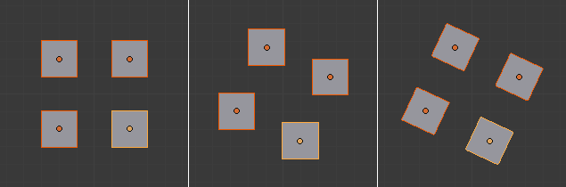
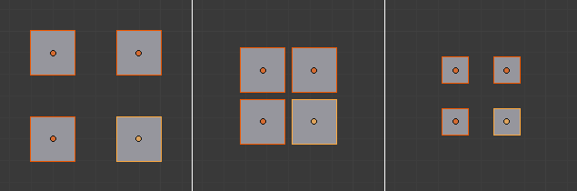

变换选项¶
参考
- 模式
物体模式和姿态模式
- 标题
仅影响¶
- 原点 Ctrl-Period
直接变换物体的 原点。这仅适用于具有可变换数据的物体；即它不适用于灯光物体。
启用后，将显示物体轴向。
使用此选项时请小心，因为它会变换物体数据，从而导致关联副本被意外移动。
- 位置
在变换时更改物体原点相对于另一个点的位置。换句话说，轴心点和原点不能共享同一位置。这不会影响物体局部变换，只是影响其在世界空间中的位置。
在下列示例中，给出了当启用(中)和禁用(右) 位置 时，物体的缩放和旋转的对比效果。
旋转示例。¶
缩放示例。¶
- 父级
Transforms Parent Objects while leaving their children objects unaffected.